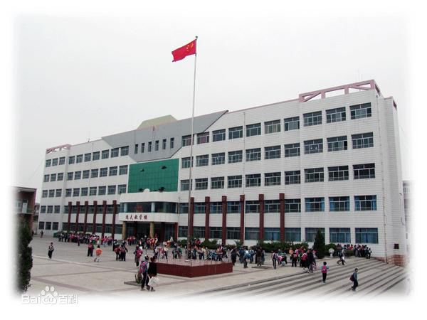
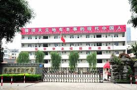
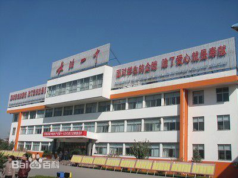
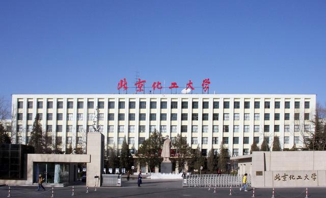

Here, I am going to introduce my education experience, especially my university !
If you find you are attracted to it, try to apply !
| Picture | Name | Province | More Information | |
|---|---|---|---|---|
| Priminary School |  | Changzhi Friendship Elementary school | Shanxi | View its website (Chinese) |
| Secondary School |  | Changzhi Experimental Middle School | Shanxi | View its website (Chinese) |
| High School |  | Changzhi No.1 Middle School | Shanxi | View its website (Chinese) |
| University |  | Beijing University of Chemical Technology | Beijing | View its website (English) |
Beijing University of Chemical Technology (BUCT) is a high-level university that aims to develop chemical talent at the cutting-edge of science and technology. The university was established in 1958 and formerly known as the Beijing Institute of Chemical Technology. As a national key university directly affiliated to the Ministry of Education of the People’s Republic of China, and as one of the Project 211 universities and 985 Project Innovation Platforms, BUCT has responsibilities for basic and applied scientific research; original, high-tech development; and the training of high-level, innovative talent. With half a century of history, BUCT has become a multi-disciplinary university with a solid foundation in science and engineering, as well as other distinctive disciplines such as management, economics, law, literature, education, philosophy, medical sciences. The university is a multi-level training system for undergraduates, graduate students, postdoctoral researchers, and students from foreign countries. Since its establishment, BUCT has trained more than 100,000 people for China. BUCT has a total of 14 colleges with 15,249 full-time undergraduate students; 6,303 full-time graduate students (including 804 PhD students); and 460 international students. The university also has 4,096 continuing education students, including those in higher vocational education, the correspondence university, and the night university.
BUCT has 2,354 faculty members, including 1,093 full-time teachers; 771 are full or associate professors. Faculty members include: 11 academicians of the Chinese Academy of Science and the Chinese Academy of Engineering, one National Outstanding Professional and Technical Talent; 7 experts from the National Thousand Talents Program; 8 Chief Scientists in the 973 National Program; 24 winners of “the National Science Fund for Distinguished Young Scholars”; 7 winners of the National Outstanding Youth Science Fund; 2 winners of the Chinese Young Women Scientist Award; 11 Distinguished Professors and 2 Chair Professors from the Cheung Kong Scholars Program of the Ministry of Education; 2 Young Scholars from the Cheung Kong Scholars Program of the Ministry of Education, 71 from the Cross-Century Talent Program of the Ministry of Education.